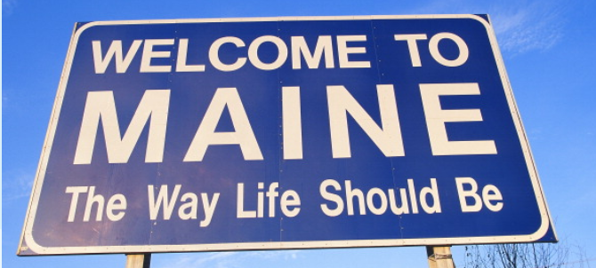

Back in July 2016, my boyfriend and I took a trip to Maine and started the trip in Kennebunkport. Kennebunkport is a quick hour and a half drive from Boston Logan International Airport. Here are some highlights from the trip.

Day 1:
We arrived in Kennebunkport and checked into the Yachtsman Lodge which was right on the water at the Marina. It was a quaint hotel and walking distance to downtown. Since the hotel is on the Marina, we had lots of duck visitors! We then walked around downtown, Kennebunkport is the definition of a quintessential New England town. We went into the various shops and had dinner at David's KPT - highly recommend!
Day 2:
The second day we walked around downtown, Kennebunkport is the definition of a quintessential New England town. We went into the various shops and had dinner at David's KPT - highly recommend!